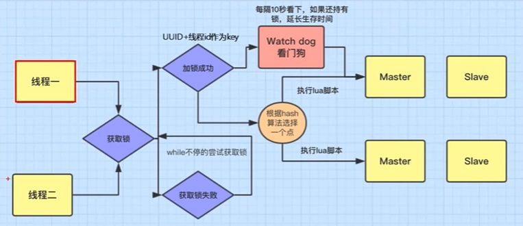

数据结构
常见数据结构
常见的数据结构有五种
String、List、Hash、Set、Zset
不同数据结构使用场景
- String 类型的应用场景：缓存对象、常规计数、分布式锁、共享 session 信息等。
- List 类型的应用场景：消息队列（但是有两个问题：生产者需要自行实现全局唯一 ID；2. 不能以消费组形式消费数据）等。
- Hash 类型：缓存对象、购物车等。
- Set 类型：聚合计算（并集、交集、差集）场景，比如点赞、共同关注、抽奖活动等。
- Zset 类型：排序场景，比如排行榜、电话和姓名排序等。
Zset
基础
可以用来设置排行榜，与set相比多一个额外的属性score，记录每行数据的得分。
底层实现
旧版：压缩链表 和 跳表新版：Listpack 和 跳表当集合元素小于128个且每个元素值小于64时，使用压缩链表
其他情况下使用跳表.
跳表
空间换时间，上层节点是下层节点的索引，近似于折半查找。
当在上层找到所需区间后就去下一层进一步查找
同一列保存的是相同的数据
typedef struct zskiplistNode { //Zset 对象的元素值 sds ele; //元素权重值 double score; //指向前面节点的指针 struct zskiplistNode *backward; //这是一个数组，就是存的数据存在跳表哪一层级上 struct zskiplistLevel { struct zskiplistNode *forward; unsigned long span; } level[]; }zskiplistNode,
插入节点：没有严格按照上层和下层是1：2的关系。
实际上是生成一个0~1的随机数，如果数小于0.25，则加一层，大于0.25的话就是当前层。
跳表和B+数区别
- 跳表占用的内存比较少
- 查找时操作比B数简单
- 算法实现简单
压缩列表
只适用于数据量不大的场景。
数据结构
- zlbytes记录的是整个压缩列表占用的内存字节数
- zltail是存储的尾节点偏移量
- zllen记录的是压缩列表节点数量
- prevlen记录的是当前节点前一个节点的长度
- encoding记录的是data存储的是那种类型的数据(解码用)
- data存储的是二进制数据，需要根据encoding解码为字符串或者int
压缩列表，指的就是每个节点是变长的，同时也因为是变长的，可能会发生连锁更新
连锁更新
待看
listpack
123
Hash
扩容
在Hash工作的时候都是插入在Hash1，会有一个Hash2备用，但是还没被分配空间
需要扩容时
- hash2的空间是hash1的一倍
- hash1的数据迁移到hash2
- 把hash2设为hash1，新增一个hsah作为备用
数据迁移
hash1的数据过多，一次性迁移的话会阻塞redis，所以需要分多次迁移
在迁移期间，删改查需要在两个hash表上操作，增加的话只在hash2上
当客户端调用redis时，除了会执行对应的操作，还会顺便将1内的数据移到2里面一点点。
分批处理就减小了redis阻塞的情况。
线程模块
Redis为什么快？
- 操作在内存中完成（）
- 单线程（避免线程切换开销，维护简单）
- IO多路复用
哪里使用了多线程？
对于处理客户的的请求，使用的是主线程：接收客户端请求→解析请求→进行数据读写→发送客户端
但是对于耗时的操作：关闭文件、AOF刷盘、释放内存 使用的是后台线程，也就是多线程
因为主线程只有一个，用来处理耗时操作的话会影响客户端响应速度，所以交给多线程
后来随着网络发展，网络IO也采用了多线程来处理，仅针对数据的发送。
IO多路复用？
因为是单线程，所以在读操作或者等待用户输入时需要等待，会导致无法为其他进程提供服务
所以要多路复用（有单核CPU的感觉？）
事物
如何实现原子性？
- 事物正常执行，可以保证原子性。
- 事务执行中某一个操作执行失败，不能保证原子性。
日志
持久化方法
因为redis在内存中，掉电后数据丢失，所以有持久化方法。
- AOF日志：持久化的是redis命令
- RDB快照：存储的是某一时刻的二进制数据
AOF
redis在执行一条写操作后就把该命令以追加的方式写到文件里
写入时间：
- Always总是：有更新就写
- Everysec每秒：每秒钟写一次
- No：由操作系统决定何时写
优点：安全
缺点：占空间大、频繁写入影响性能
RDB
AOF存储的是命令，所以恢复的时候还要再执行一遍，耽误时间。
RDB快照方式的存储，恢复速度较快。
存储方法：
- save：用主线程生成RDB文件，所以可能会阻塞主线程
- bgsave：用子进程来生成RDB文件。
优点：文件体积小，备份和恢复速度非常快
缺点：发生故障，记录快照后的数据更新将会丢失。
缓存淘汰和过期删除
- 缓存淘汰是内存满了的时候，redis会淘汰一些不必要的内存资源，腾地方
- 过期删除是将过期的键值对进行删除，Redis是惰性删除+定期删除
缓存淘汰
- noeviction：缓存满了之后不进行数据淘汰，此时redis写入的话返回保持，但是可以查询或者删除。
- vola-random：过期的，随机删除过期数据
- volatile-ttl：过期的，先过期先淘汰
- volatile-lru：过期的，最近最久未使用 先淘汰
- volatile-lfu：过期的，使用次数最少的先淘汰
- allkeys-random：所有数据，随机淘汰任意键值
- allkeys-lru：所有数据，淘汰键值中最久未使用的
- allkeys-lfu：所有数据，淘汰使用次数最少的键值。
过期删除
惰性删除+过期删除
惰性删除：只有在查询数据的时候才会检查key是否过期，过期了删除，不过期返回。
定期删除：每过一段时间随机检测一批key是否过期，删除过期的。
- 默认10秒检查一次
- 检查的一批key有20个
- 如果已过期的key占比超过25%，则删除过期的后再抽20个进行检查
- 直到过期key的比例小于25% 或者 25ms后还没删完，也结束循环。
集群
主节点负责增写改操作，从节点负责读操作
所以主节点和从节点之间就需要进行同步
完全同步
完全同步发生的情况：
- 从服务器初次连接主服务器
- 从服务器数据丢失
- 从服务器长时间未和主服务器同步
同步的步骤：
- 建立链接
- 主服务器传数据给从服务器
- 然后发送执行2期间新增数据的命令给从服务器
具体流程：
- 从服务器发送SYNC命令
- 主服务器生成RDB快照
- 传输快照
- 从服务器接收并装载RDB快照
- 主服务器记录写命令
- 传输写命令
增量同步
仅同步断点之后新增的数据
数据过期后并不会立即删除，因为删除操作会占用cpu，对性能造成影响，所以不立即删除
判断节点是否存活
- ping
- INFO 命令
- 监控系统
哨兵
保证Redis的高并发高可用
原理
主从同步的时候，主服务器挂了，把从服务器修改为主服务器会很麻烦，需要人工干预，所以引入哨兵。
哨兵（观察者节点）：会检查主服务器是否存活，若故障了，就选一个从节点当主节点，并把相关信息通知给其他从节点和客户端。
负责的事情：监控、选主、通知
选主步骤
- 故障节点主观下线(哨兵判定一个节点故障)
- 故障节点客观下线（多个哨兵判定一个节点故障）（如果故障节点是主节点，才有下述操作）
- 集群选举哨兵Leader
- 哨兵Leader选定新主节点
优缺点
优点：高可用性、高性能、扩展性好
缺点：部署和维护复杂、集群同步问题、数据分片限制
脑裂
当主节点网络断了，哨兵访问不到主节点，但是客户端可以访问主节点
所以哨兵会选择新的主节点，但是老的主节点还没有死，客户端会往里面写入信息
此时新主节点就不会得到修改的数据，当网络恢复后，老主节点会消亡，所以在这期间修改的内部数据消失。
导致新增的数据消失。
如何解决：设置最小的从节点个数为1，这样客户端就不会在老主节点写入数据，因为他没有从节点。
使用场景
缓存穿透
一个数据缓存没有，数据库也没有，类似于被击穿了。
正常的查询
缓存穿透：查询一个不存在的数据，会去mysql里面查找，但每查到结果，所有并不会写入缓存，会导致每次请求都查询数据库。
用布隆过滤器解决
新增了布隆过滤器(位图)，
但是也会出现意外情况，成为误判率
误判率在5%以内就可以接受
缓存击穿
给某一个key设置了过期时间，当key过期的时候，恰好这时间点对这个key有大量的并发请求过来，这些并发的请求可能会瞬间把数据库压垮。
分布式锁：使用双重判定锁
分布式锁的伪代码：
public String selectTrain(String id) { String cacheData = cache.get(id); if (StrUtil.isBlank(cacheData)) { Lock lock = getLock(id); lock.lock(); try { String dbData = trainMapper.selectId(id); if (StrUtil.isNotBlank(dbData)) { cahce.set(id, dbData); cacheData = dbData; } } finally { lock.unlock(); } } return cacheData; }
当5个线程同时发现数据不存在，会都去争抢锁，1争抢到之后修改数据库，但是此时2345也在争抢锁，1释放锁后，2345会继续读数据库，而不是直接去缓存里面找。
所以需要在抢到锁之后再判断一下缓存里是否存在这个数据，没有的话再请求数据库。
public String selectTrain(String id) { String cacheData = cache.get(id); if (StrUtil.isBlank(cacheData)) { Lock lock = getLock(id); lock.lock(); try { cacheData = cache.get(id); if (StrUtil.isBlank(cacheData)) { String dbData = trainMapper.selectId(id); if (StrUtil.isNotBlank(dbData)) { cahce.set(id, dbData); cacheData = dbData; } } } finally { lock.unlock(); } } return cacheData; }
缓存雪崩
Redis缓存雪崩是指当大量缓存数据同时过期时，这些数据的请求会同时到达数据库，导致数据库压力骤增，甚至可能崩溃。
解决方案
- 使用集群部署，即使某个节点缓存发生故障，其他节点还能继续使用。
- 备份缓存
- 设置不同的过期时间，避免大量数据同时过期
双写一致性
如何保证mysql的数据和redis同步？
写操作：
延时双删：
删除缓存→修改数据库→(延时一会)删除缓存
这个在延时删除第二个缓存前可能有短暂的请求到了旧数据的情况，但是从速度方面考虑，这个就是最优的选择。
加锁的话是强一致性，不过会影响客户端体验。
读写锁
因为这些数据都是读多写少，所以可以用读写锁，即可以有多个线程同时读。这样是保证了强一致性。
用synchronized的话，会影响读的性能。
异步通知
对同步性要求不高的情况下用 ，具体来说就是延时双删把第二步删除交给中间件来做。
使用Canal监听数据库是否发生改变，改变了的话就删除缓存，删除失败的话就使用MQ重试删除。
分布式锁
- 加synchronized锁，写操作 或者 读操作 都加上锁。不过这样的话会降低性能。而且如果用微服务的话，不同服务器有各自的synchronized锁，不同服务器线程会出问题。
- setnx是redis自带的分布式锁，不同服务器之间要抢夺这一把锁。
- 锁可以设置过期时间
- Redisson给锁设置的有过期时间，防止线程挂掉后没有释放锁。但是可能线程未执行完，锁就过期了，所以使用看门狗实时修改锁的时间。

普通锁是redis集群主节点更新后就返回。readlock是等主节点和从节点都更新后才释放锁